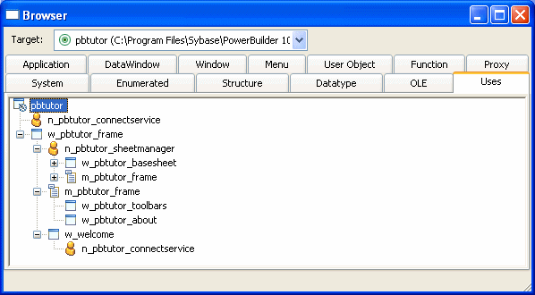

If you are working with an application that references one or more objects in an application-level script, you can look at the application's structure in the Browser.
 To display the application's structure:
To display the application's structure:
Click the Browser button on the PowerBar.
In the Browser, select the Uses tab page and select Expand All from the Application object's pop-up menu.
PowerBuilder expands the display to show all the global objects that are referenced in a script for the Application object. You can expand the display further as needed.
The Browser's Uses tab page shows global objects that are referenced in your application. It shows the same types of objects that you can see in the Library painter. It does not show entities that are defined within other objects, such as controls and object-level functions.

The Browser displays the following types of references when the Application object is expanded.
These are examples of objects referenced in painters:
These are examples of objects referenced in scripts:
Open(w_continue)
f_calc(EnteredValue)
m_new mymenu
mymenu = create m_new
mymenu.m_file.PopMenu(PointerX(), PointerY())
The Browser does not display the following types of references.
These are examples of objects referenced through instance variables or properties:
w_emp.Title = "Managers"
These are examples of objects referenced dynamically through string variables:
window mywin
string winname = "w_go"
Open(mywin,winname)
dw_info.DataObject = "d_emp"